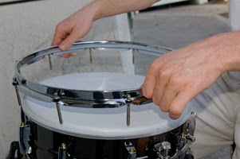
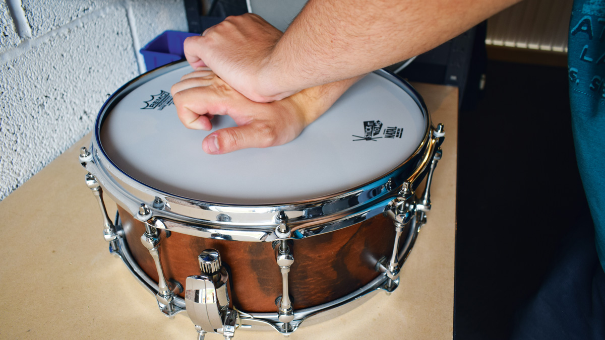
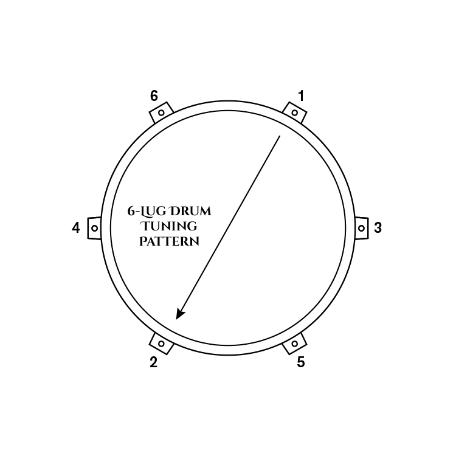
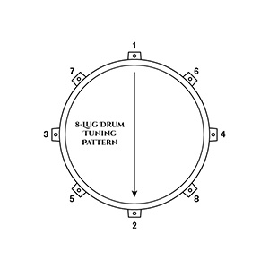
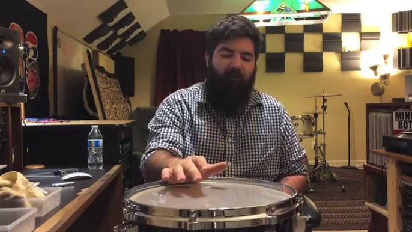

Tuning a drum set is as much an art as it is a science. What you hear in recordings often differs from reality, since studio drums are usually enhanced with effects, compression, and EQ. In live or personal settings, you'll need to rely on your ears, focusing on even tone and consistent pitch across the drumhead. Keep in mind that each drum shell has its own character: different woods and materials produce distinct sounds—some may be brighter, others warmer or more resonant. Understanding these natural differences will help you make tuning decisions that suit your kit, your style, and the music you want to create.
Step-by-step Drum Tuning Process:
-
Remove the Old Head & Clean the Drum
Take off the hoop and the old drumhead. Clean the bearing edge thoroughly, removing any dust, grime, or debris to ensure a smooth, even surface for the new head.
 -
Hand-Tighten the Lugs
Place the new drumhead on the shell, then finger-tighten each lug evenly around the drum. This establishes a baseline tension and prepares the head for proper seating.
-
Seat the Drumhead
Place one hand flat in the center of the drumhead and press firmly, evenly seating the head onto the bearing edge. Use your other hand for support as needed. You may hear a slight “crackling” sound as the head stretches—this is normal. Press several times to make sure the head is fully seated, then hand-tighten the lugs once more to secure it. A properly seated head ensures even vibration and reduces unwanted overtones.
 -
Apply Initial Key Tension
Using a drum key, tighten each lug in small increments (about a half-turn at a time) following a star pattern—opposite lugs first rather than going around sequentially. This keeps tension even and avoids warping the head.
  -
Tap & Listen
Tap the drumhead lightly near each lug, about an inch from the edge. Listen for differences in pitch and adjust the lug until each spot produces a matching tone. This step is crucial for smooth, consistent resonance.
 -
Balance Batter & Resonant Heads
Repeat the same steps on the bottom (resonant) head, tuning it in relation to the top (batter) head. Slightly lower tension on the resonant head produces a punchier, more controlled sound, while equal or slightly higher tension adds sustain and openness.
-
Fine-Tune by Ear
Play the drum as you normally would, focusing on how it sounds in context. Adjust lugs in small increments to tame unwanted overtones or enhance the tonal character you're chasing—tight and aggressive, open and booming, or dark and controlled.
-
Check & Recheck
Once all adjustments are made, strike multiple areas of the drum to verify even pitch and tone. Make final tweaks as necessary. After tuning all drums individually, play the full kit together and make small adjustments to ensure a cohesive, balanced sound across the set.